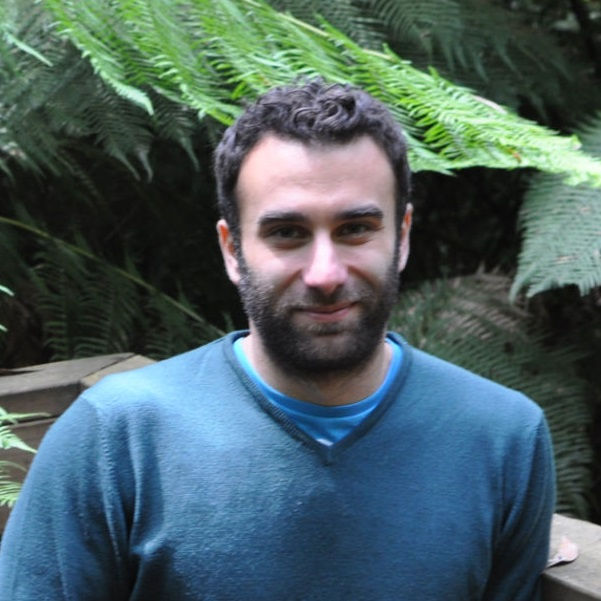

Can Balioglu

I am a Research Engineer (E7) at FAIR and previously worked as a Senior Engineer in PyTorch. My interests include machine learning and systems, with a particular focus on performance engineering and scalability.
Links
Some Past Work
- My original work on FakeTensor (an experimental C++ implementation in torchdistx) later became a fundamental conceptual building block of the torch.compile stack.
- I designed and authored the Deferred Lazy Initialization method in PyTorch that is now used by many training frameworks such as DeepSpeed and PyTorch Lightning.
- Following Myle Ott, I maintained fairseq for more than 3 years until its archival.
- I am also the author of fairseq2, the successor to fairseq, which is widely used within FAIR.
Copyright (c) 2015-present Can Balioglu, licensed MIT.